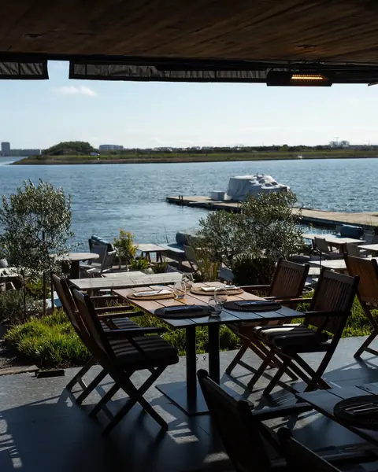
12:00 hs
Abrimos frente al agua
Las mesas del deck, a metros del lago, con el sol de mediodía.
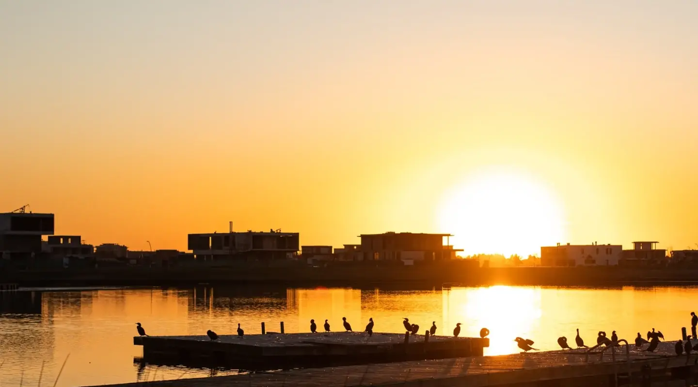
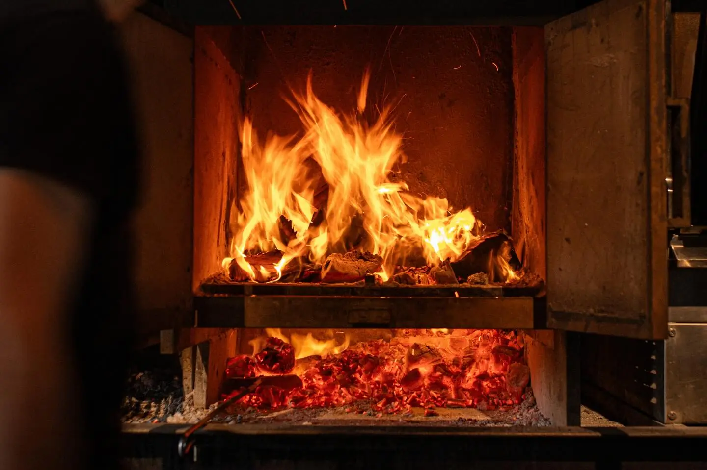
Los cuatro fuegos
Kamado, josper, ganchos y parrilla: cada corte tiene el suyo. Prendé uno, mirá qué sale de ahí y anotá lo que querés probar.
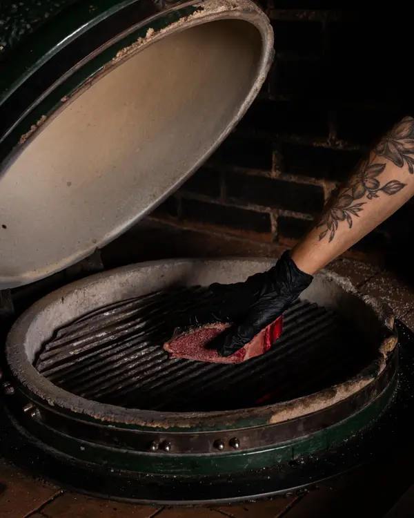
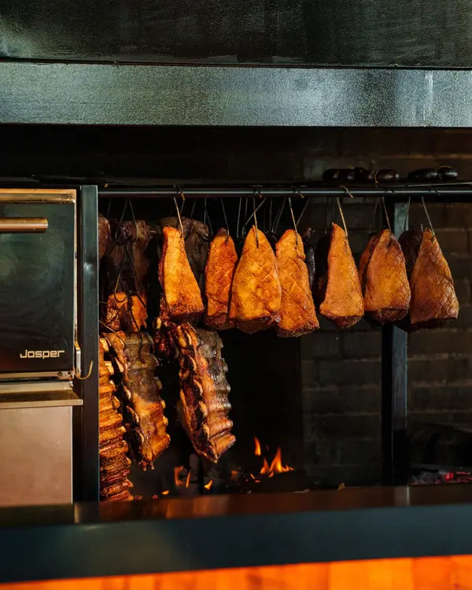
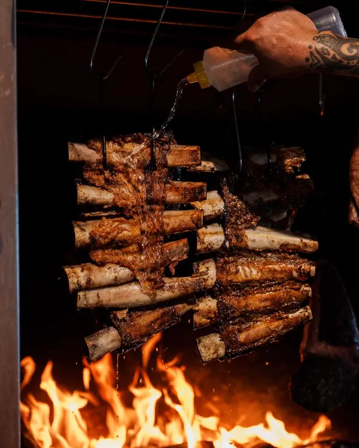
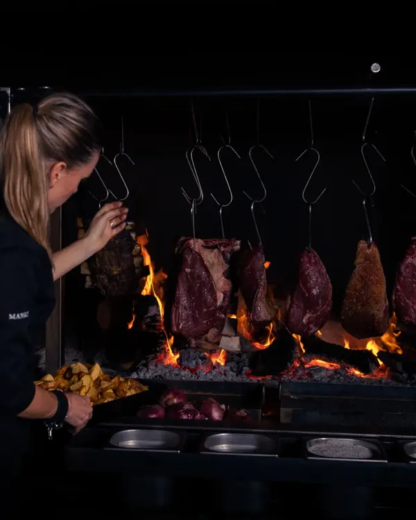
Un día en Manso
De martes a viernes, de 12:00 a 16:00 hs y de 20:00 a 24:00 hs. Sábados, domingos y feriados, de corrido: el lago va cambiando de color.

12:00 hs
Las mesas del deck, a metros del lago, con el sol de mediodía.
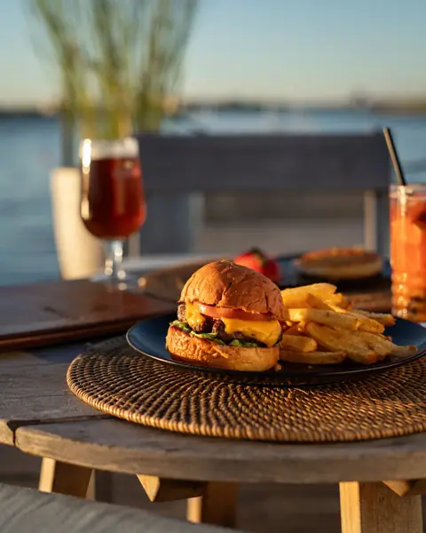
De día
Sándwiches, tabla de quesos, churros y helados para quedarse al sol.
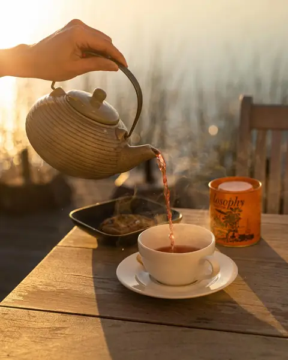
La tarde
Los fines de semana, de corrido: una tetera y algo dulce mientras baja el sol.
19:40 hs
Hoy el sol se pone sobre el lago a esa hora. Los fines de semana, la mesa de adelante es tuya.
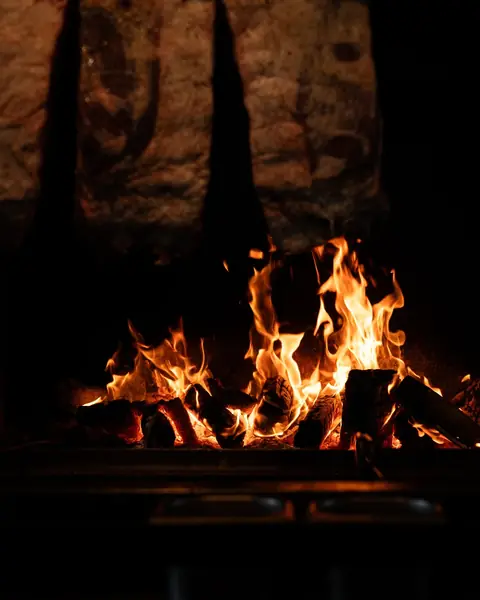
20:00 hs
Kamado, josper, ganchos y parrilla, hasta las 24:00 hs.
Elegí tu fuego →La carta
Para empezar, ensaladas, nuestra cocina y para ir terminando. El bar, el gin y los vinos te esperan en la carta completa.
La carta de gin
Más de veinte etiquetas, tres tónicas y los toppings de la barra. Elegí y mirá cómo queda la copa.
Elegí tu gin—
Gin + tónica, a precio de carta.
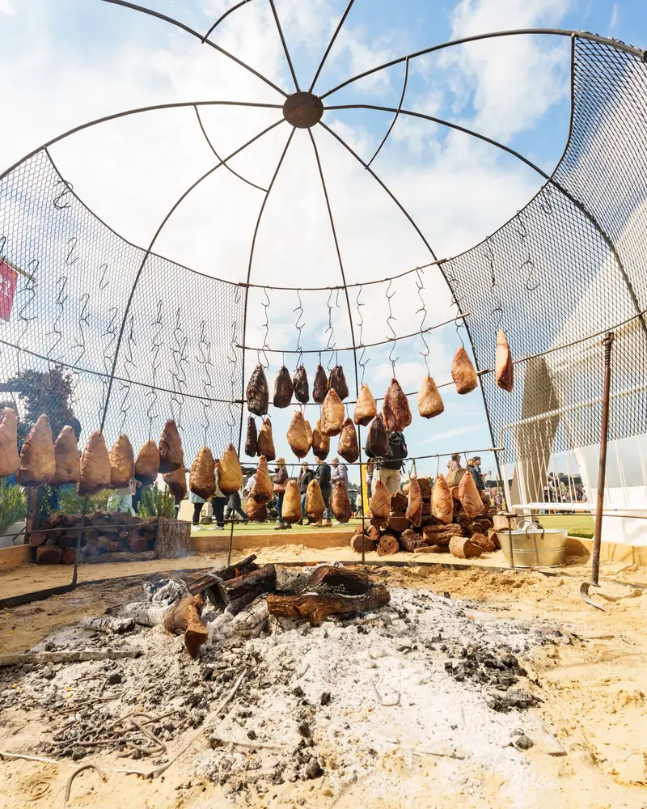
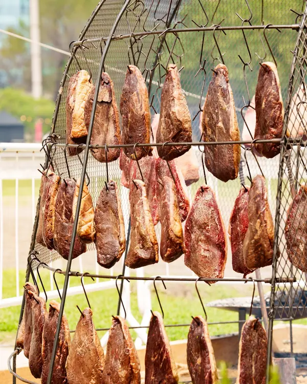
Eventos
Asado a la cruz al aire libre, frente al lago. Contanos qué quieren festejar, cuántos van a ser y para cuándo, y te armamos la propuesta.
Cómo llegar
Rincón de Milberg, Nordelta. Frente al lago.